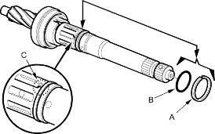
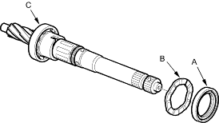
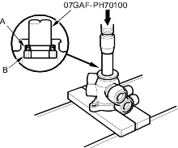
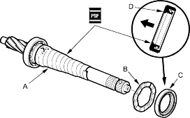

- Using a cutter or an equivalent tool, cut the valve seal ring (A) and O-ring (B) at the groove (C) in the pinion shaft. Remove the valve seal ring and O-ring. Be careful not to damage the edges of the pinion shaft groove and outer surface when removing the valve seal ring and O-ring.

- Remove the valve oil seal (A) and wave washer (B) from the pinion shaft.
Note these items during disassembly:
- Inspect the ball bearing (C) by rotating the outer race slowly. If there is any excessive play, replace the pinion shaft and sleeve as an assembly.
- The pinion shaft and sleeve are a precise fit; do not intermix old and new pinion shafts and sleeves.

- Press the valve oil seal (A) and bushing (B) out of the valve housing using a hydraulic press and special tool.

Reassembly
- Apply vinyl tape (A) to the stepped portion of the pinion shaft, and coat the surface of the vinyl tape with the power steering fluid.

- Install the wave washer (B). Coat the inside surface of the new valve oil seal (C) with power steering fluid, and install the seal with its grooved side facing opposite the bearing, then slide it over the pinion shaft, being careful not to damage its sealing lip (D). Remove the vinyl tape.